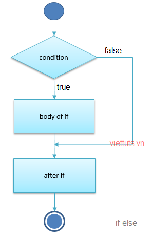

Mệnh đề if - else trong java
Toán tử trong java
Mệnh đề Switch-case trong java
Mệnh đề if trong java được sử dụng để kiểm tra giá trị dạng boolean của điều kiện.
Mệnh đề này trả về giá trị True hoặc False. Có các kiểu của mệnh đề if-else trong java như sau:
- Mệnh đề if
- Mệnh đề if-else
- Mệnh đề if-else-if
Nội dung chính
- Mệnh đề if
- Mệnh đề if-else
- Mệnh đề if-else-if
Mệnh đề if
Mệnh đề if được sử dụng để kiểm tra giá trị dạng boolean của điều kiện. Khối lệnh sau if được thực thi nếu giá trị của điều kiện là True
Cú pháp:
- if (condition) {
- //khối lệnh này thưc thi
- //nếu condition = true
- }

Ví dụ:
- public class Test {
- public static void main(String[] args) {
- int age = 20;
- if (age > 18) {
- System.out.print("Tuổi lớn hơn 18");
- }
- }
- }
Kết quả:
Tuổi lớn hơn 18
Mệnh đề if-else
Mệnh đề if-else cũng kiểm tra giá trị dạng boolean của điều kiện.
Nếu giá trị điều kiện là True thì chỉ có khối lệnh sau if sẽ được thực hiện,
nếu là False thì chỉ có khối lệnh sau else được thực hiện.
Cú pháp:
- if (condition) {
- //khối lệnh này thưc thi
- //nếu condition = true
- }
- else {
- //khối lệnh này thưc thi
- //nếu condition = false
- }
Ví dụ:
- public class Test {
- public static void main(String[] args) {
- int number = 13;
- if (number % 2 == 0) {
- System.out.println("Số " + number + " là số chẵn.");
- } else {
- System.out.println("Số " + number + " là số lẻ.");
- }
- }
- }
Kết quả:
Số 13 là số lẻ.
Mệnh đề if-else-if
Mệnh đề if-else-if cũng kiểm tra giá trị dạng boolean của điều kiện.
Nếu giá trị điều kiện if là True thì chỉ có khối lệnh sau if sẽ được thực hiện.
Nếu giá trị điều kiện if else nào là True thì chỉ có khối lệnh sau else if đó sẽ được thực hiện...
Nếu tất cả điều kiện của if và else if là False thì chỉ có khối lệnh sau else sẽ được thực hiện.
Cú pháp:
- if (condition1) {
- //khối lệnh này thưc thi
- //nếu condition1 = true
- }
- else if (condition2)
- //khối lệnh này thưc thi
- //nếu condition2 = true
- }
- else if (condition3)
- //khối lệnh này thưc thi
- //nếu condition3 = true
- }
- ...
- else
- //khối lệnh này thưc thi
- //nếu tất cả những điều kiện trên là false
- }
Ví dụ:
- public class Test {
- public static void main(String[] args) {
- int marks = 65;
- if (marks < 50) {
- System.out.println("Tạch!");
- } else if (marks >= 50 && marks < 60) {
- System.out.println("Xếp loại D");
} else if (marks >= 60 && marks < 70) {
- System.out.println("Xếp loại C");
- } else if (marks >= 70 && marks < 80) {
- System.out.println("Xếp loại B");
- } else if (marks >= 80 && marks < 90) {
- System.out.println("Xếp loại A");
- } else if (marks >= 90 && marks < 100) {
- System.out.println("Xếp loại A+");
- } else {
- System.out.println("Giá trị không hợp lệ!");
- }
- }
- }
Kết quả:
Xếp loại C
Toán tử trong java
Mệnh đề Switch-case trong java